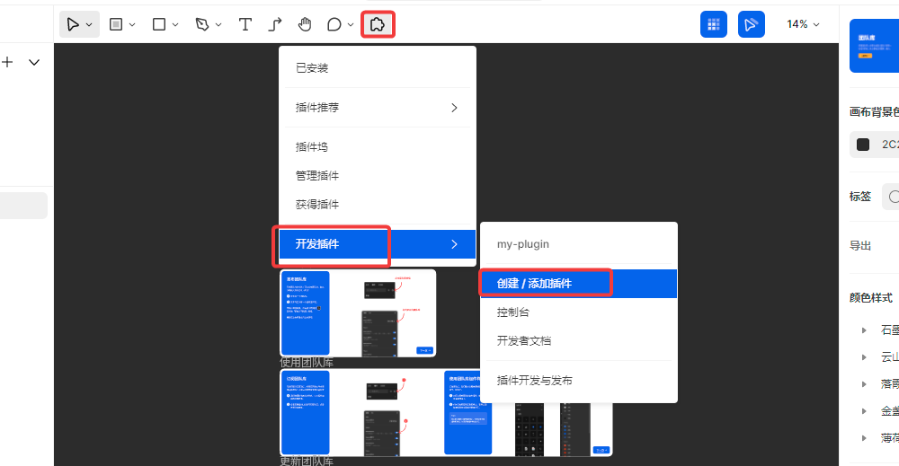
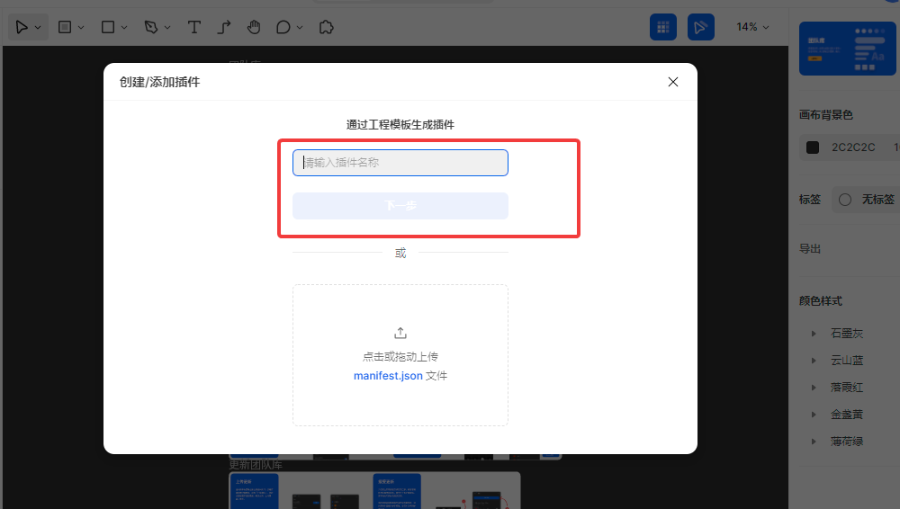
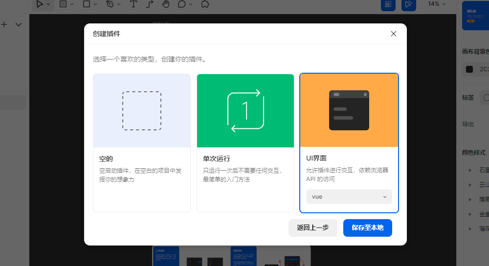
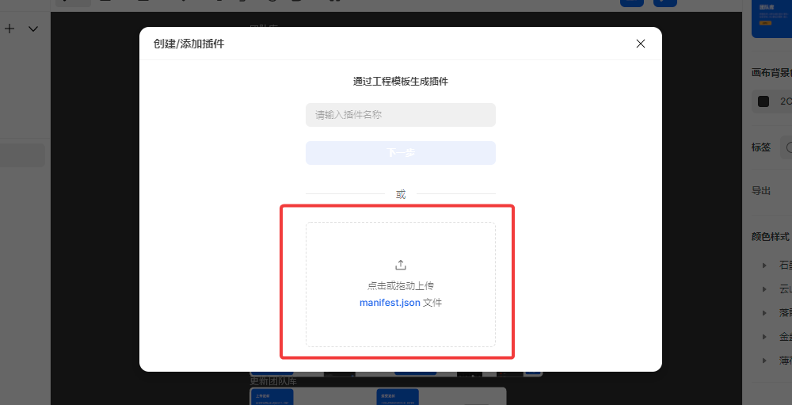
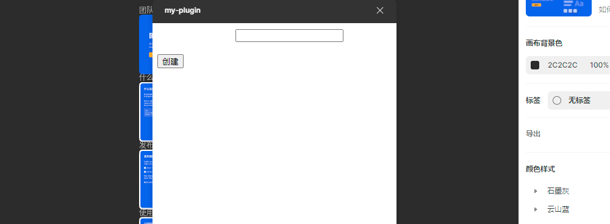
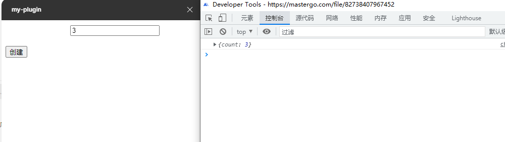
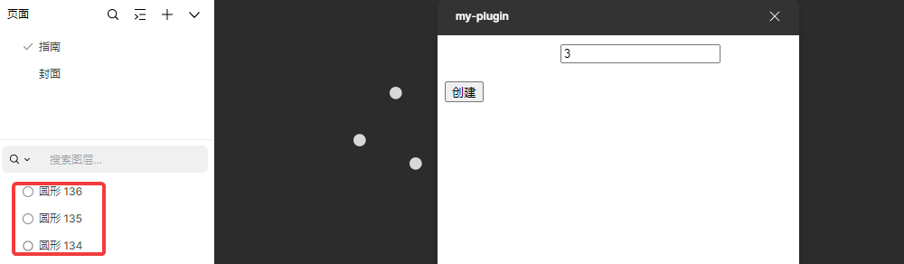

第一个插件
0x01 manifest配置文件
插件所有的配置都是通过manifest.json文件来控制的，一个基本的内容为
复制json
{
"name": "my-first-mastergo-plugin",
"id": 1234567890,
"api": "1.0.0",
"main": "./main.js",
"ui": "./ui.html",
"menu": [
{
"name": "打开主页面",
"command": "home"
},
{
"name": "执行B功能",
"command": "run"
},
],
}
- name 插件的名称，该名称会出现在插件菜单栏里
- id 每一个插件都有一个唯一id用来标识
- api mastergo的api版本，最好用最新的
- main 相对路径，用来指定在沙盒里执行的javascript脚本
- ui 相对路径，用户界面要加载的HTML
- menu?:ManifestMenu[] menu选项是一个json数组，设置menu可以为插件添加子菜单入口，并调整菜单结构和分割线的位置，在运行时触发插件的run事件，其参数为选中的菜单中设置command值，也可以通过mg.command获取
0x02 创建插件

有两种方式来创建插件，第一种方式为输入插件名直接创建插件

然后选择一种创建模式，保存到本地就行

第二种方式是将创建好的配置文件信息拖进去就可以

一个简单的插件目录结构为
复制plain
my-plugin
|- manifest.json
|- main.js
|- ui.html
manifest.json内容为
复制json
{
"name": "my-plugin",
"id": 82928041410902,
"api": "1.0.0",
"main": "index.js",
"ui": "index.html"
}
ui.html内容为
复制vbscript-html
<!DOCTYPE html>
<body>
<div class="content">
<div style="margin-bottom: 20px; color: #fff;">
输入椭圆的数量：<input type="text" />
</div>
<button id="btn">创建</button>
</div>
</body>
index.js内容为
复制javascript
mg.showUI(__html__)
运行效果为

0x03 向主线程传递消息
传递消息主要通过调用 parent.postMessage 函数完成
html代码添加
复制plain
<script>
// 获取input输入表单
const input = document.querySelector("input")
// 绑定按钮click事件
document.getElementById("btn").addEventListener("click", (ev) => {
// 发送给主线程
parent.postMessage({ count: Number(input.value)}, "*")
})
</script>
然后主线程需要监听 onmessage 事件，然后就可以接收iframe传来得数据，index.js需要添加
复制plain
mg.ui.onmessage = (msg) => {
console.log(msg)
}
运行效果为

0x04 调用插件API创建椭圆图层
onmessage事件监听的代码改为
复制javascript
mg.ui.onmessage = (msg) => {
const count = msg.count;
for(i = 0; i < count; i++) {
mg.createEllipse()
}
}
运行效果为

libc-2.31.so